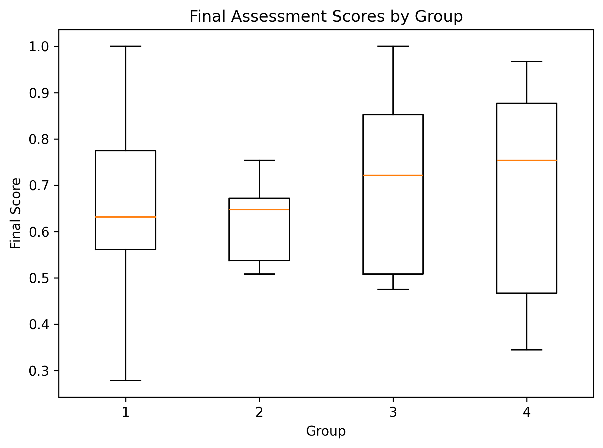
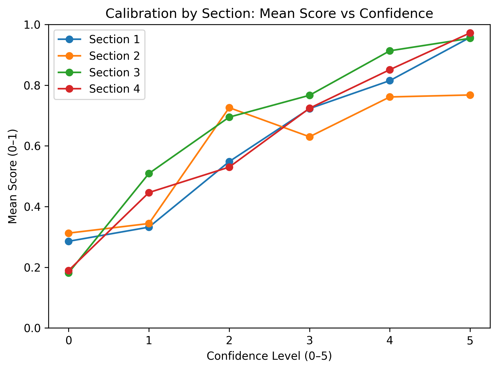
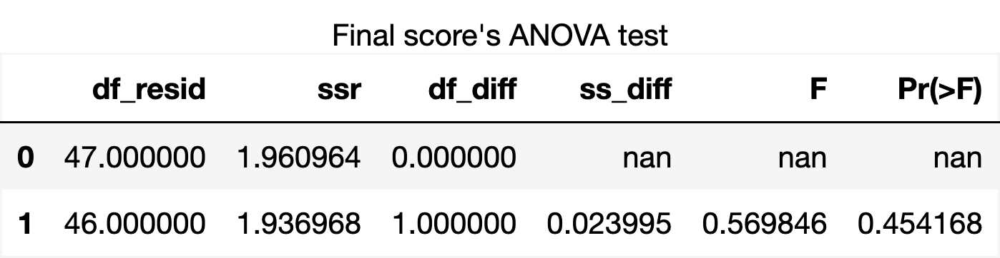
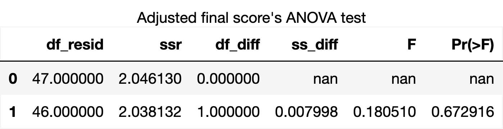

Simulation Coding Exercises for Teaching Probability Theory
Motivation
Probability is a core part of modern STEM education and everyday decision-making, yet many people find it confusing and unintuitive. Students often struggle with ideas like conditional probability, rare events, and long-run behavior: they may be able to plug numbers into formulas, but still feel unsure about what those formulas mean in real situations. This matters because probabilistic reasoning shows up in many important contexts, such as interpreting medical tests, evaluating risks, or judging the strength of data-driven claims.
Approach
Traditional probability courses tend to emphasize symbolic derivations and hand-written problem sets, which build algebraic skills but do not always help students develop a clear mental picture of random processes. In contrast, statistics and data science courses have increasingly adopted simulation-based, coding-centered approaches, where learners write short programs, generate many samples from a model, and use plots and summaries to “see’’ theoretical ideas in action. This difference motivates the need for careful, classroom-based evaluation of how coding and simulation actually affect students’ conceptual understanding of probability, beyond anecdotal enthusiasm or small, topic-specific case studies.Our project directly addresses this gap. We designed simulation-based coding exercises for several key probability topics and will embed them in a four-condition, full factorial experiment that compares a control group, a coding-only group, a handwritten-only group, and a coding+handwritten group. Within this design, we ask two related questions: (i) whether access to coding activities, in any form, leads to additional learning gains beyond traditional materials alone, and (ii) whether combining coding with handwritten work yields benefits beyond using either modality by itself.
Participants
We recruited participants from Data Science, Math, and Economics classes at UCSD. Data collection took place during the first half of winter quarter. Selection of these courses aimed to target students with comparable quantitative backgrounds, ensuring a similar baseline level of mathematics and coding skills for completing the tasks in our study. We conducted participant outreach through class announcements and emails, distributed through the professors of each respective course. Students who chose to participate were first asked to complete an intake form administered through Google Forms. Background information such as name, email address, data science affiliation, math affiliation, class standing, related coursework, and sentiment regarding familiarity with statistics, Python, and Chebyshev’s inequality were collected from each participant.
Experimental Design
Our study employs a four-condition, full factorial design to compare the effectiveness of different instructional approaches. The four treatment groups are as follows:
- No coding, no handwritten
- Coding only
- Handwritten only
- Coding + handwritten
Participants were randomly assigned to one of the four conditions, ensuring that each group had a comparable mix of students from different backgrounds and courses. Materials were administered through Gradescope, and all content focused on the topic of Chebyshev's Inequality, a concept which approximately 60% of students reported not being familiar with. Each participant took a "Final Assessment" after completing their assigned tasks, producing a quantitative score that served as the primary variable outcome to evaluate the differences in learning outcomes across each treatment condition.
Exploratory Data Analysis
Before running formal statistical tests, we first explored the distribution of assessment scores across the four instructional groups.

Final assessment scores by treatment group.
Overall, groups that completed structured engagement activities (Sections 2–4) tended to have slightly higher median scores than Section 1, where students did not complete coding or handwritten exercises. Section 4, which included both coding and handwritten work, showed relatively strong performance among higher scores, while Section 1 had a wider spread of results.

Adjusted final assessment scores by treatment group.
We also examined confidence-adjusted scores, which account for how confident students were in their answers. These adjusted scores were slightly lower across all groups, reflecting cases where students were confident but incorrect. The decrease was somewhat larger in Section 1, suggesting weaker alignment between confidence and correctness.
We also visualized the relationship between mean confidence and assessment scores to see how participants’ confidence aligned with their performance across groups (see figure below). These exploratory plots suggest potential differences, but formal statistical tests are needed to confirm significance.

Mean confidence versus assessment score by group.
While these patterns suggest some differences between instructional groups, EDA alone cannot determine whether they are statistically significant. The next section applies formal statistical tests to evaluate these differences.
Model and Feature Engineering
To evaluate the impact of each section, we tested multiple linear regression models that compared the effects of the treatment groups to models including interaction effects. The primary variables were binary indicators representing whether a participant completed coding exercises, handwritten exercises, or both. In addition to modeling the individual contributions of each treatment, we included an interaction term between coding and handwritten work to test whether completing both activities produced additional learning gains beyond their separate effects.
Beyond treatment effects, we incorporated background information collected through the intake form. These responses included variables such as class standing, academic affiliation, and prior coursework in math or data science. For simplification of the analysis, we encoded and normalized these variables to standardize responses and reduce redundancy across features. To avoid overfitting the model, we applied backward feature selection using ordinary least squares (OLS) regression with final score as the response variable. This process allowed us to remove predictors that did not meaningfully contribute to explaining variation in the outcome. OLS results revealed linearly dependent predictors within the design matrix, leading to the removal of certain features (such as class standing) from the final model.
To improve our predictive model, we added features collected from the intake form, including both categorical and numerical variables. Categorical features (one-hot encoded) are: source of recruitment, DSC affiliation, math affiliation, academic year, and statistics courses taken. Numerical features (1–5 scale) include confidence in statistics skills, familiarity with Chebyshev’s inequality, and Python skill level.
Feature naming conventions:
- Heard*: Source of recruitment
- DSC*: DSC affiliation
- MATH*: Math affiliation
- Year*: Academic year
- Stats*: Statistics courses taken
- stats_confidence: Confidence in statistics skills
- chebyshev_familiarity: Familiarity with Chebyshev’s inequality
- python_skill_level: Python skill level
Statistical Analysis
We tested whether coding exercises and handwritten exercises had different effects on learning outcomes using ANOVA. Two models were compared for both the raw and adjusted final scores: one treating coding and handwritten exercises separately with an interaction term, and another combining the two treatments.
The first ANOVA test for the raw final score compared the model β0 + β1(coding) + β2(handwritten) + β3(interaction) versus β0 + β1(coding + handwritten) + β3(interaction). The resulting p-value was 0.453, which is greater than 0.05. This means we fail to reject the null hypothesis that coding exercises and handwritten exercises have equal effects on learning outcomes.

ANOVA results comparing separate vs combined coding and handwritten exercises for final scores.
The second hypothesis tested whether the interaction term β3 contributed to predicting the final score. For the raw scores, the interaction coefficient had a p-value of 0.886, which is far above 0.05. Therefore, we fail to reject the null hypothesis that β3 = 0, indicating that the interaction term (coding * handwritten) does not have a statistically significant effect on predicting final scores.
For the adjusted final score, we repeated the ANOVA test comparing the same two models: β0 + β1(coding) + β2(handwritten) + β3(interaction) versus β0 + β1(coding + handwritten) + β3(interaction). The p-value was 0.673, larger than the 0.453 from the unadjusted score, providing even stronger evidence in favor of retaining the null hypothesis that coding and handwritten exercises have equal effects.

ANOVA results for adjusted final scores, accounting for reported confidence.
Overall, both raw and adjusted analyses indicate that completing both types of exercises does not produce a measurable benefit beyond the individual treatments, and there is no statistically significant interaction effect between coding and handwritten exercises.
Key Takeaways
This study explored the efficacy of simulation-based coding exercises on improving students' understanding of probability compared to traditional handwritten approaches. Across both exploratory data analysis and formal statistical tests, we found that students who completed structured engagement activities—whether coding, handwritten, or both—tended to perform slightly better than students who did not complete exercises. However, ANOVA tests for both raw and confidence-adjusted scores indicated that coding and handwritten exercises had statistically equivalent effects, and there was no significant interaction effect between the two treatments. In other words, completing both types of exercises did not provide measurable additional benefit beyond the individual treatments.
One limitation of this study is the relatively small sample size, which reduces the statistical power of our analyses and may limit generalizability. Future research could address this by including a larger and more diverse participant pool. Additionally, incorporating a before-and-after assessment design could better capture individual learning gains by controlling for baseline knowledge differences.
Our findings also highlight the importance of considering students’ confidence in their responses. Adjusted score analyses showed that some variation in performance may relate to over- or under-confidence rather than actual mastery, suggesting that instructional strategies could also focus on calibrating confidence alongside skill development. Overall, while coding exercises are a promising tool for active engagement, this study suggests that their benefits may be similar to traditional handwritten approaches, and further research is needed to determine how different instructional modalities can optimally support learning in probability and related subjects.